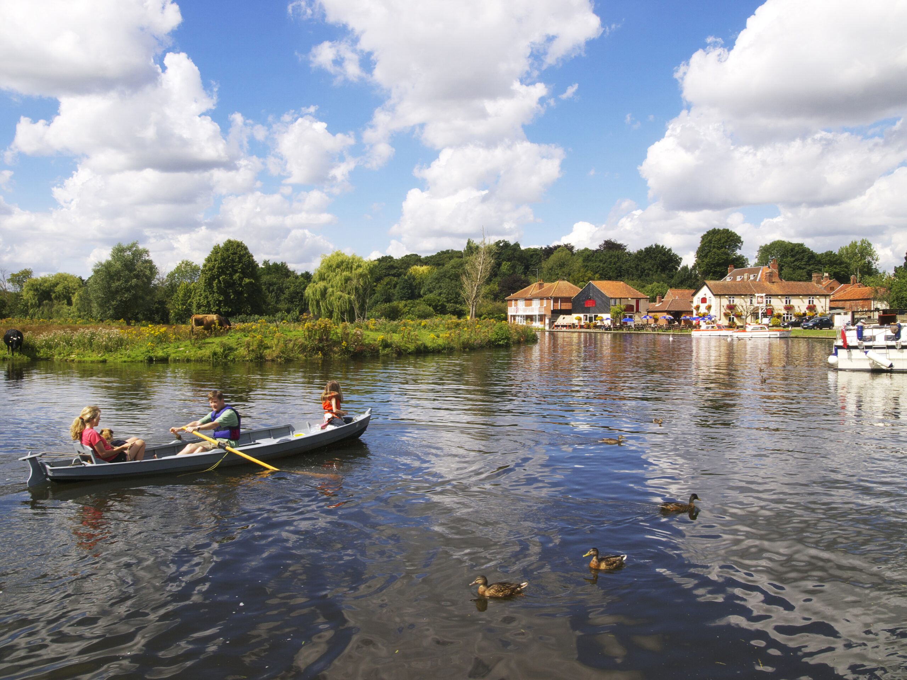
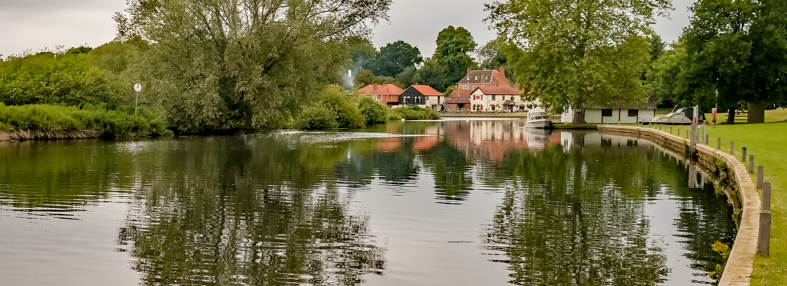
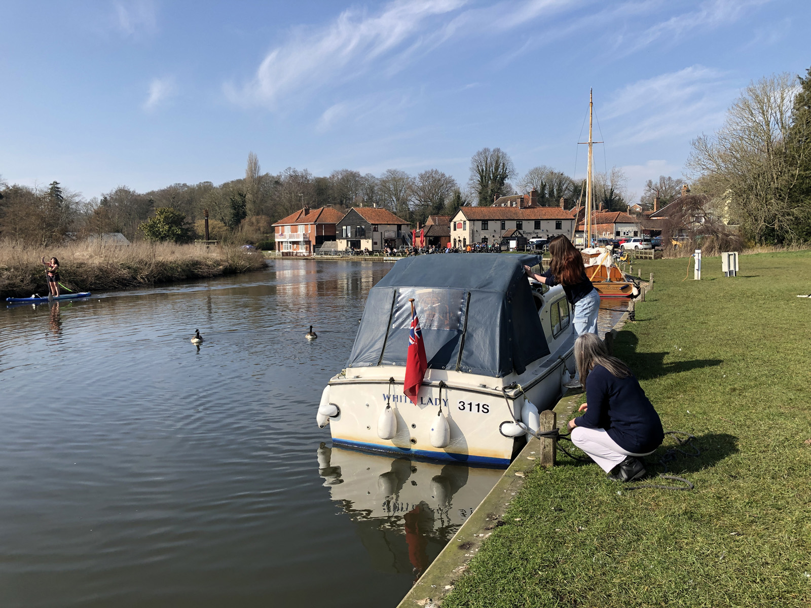
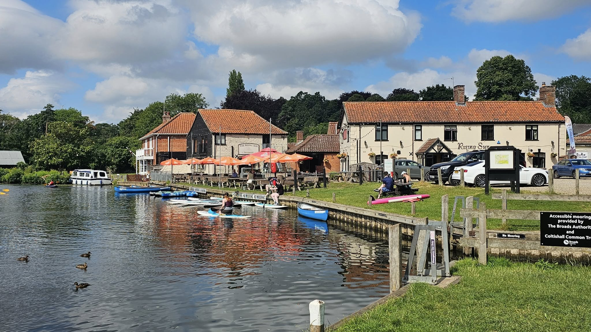
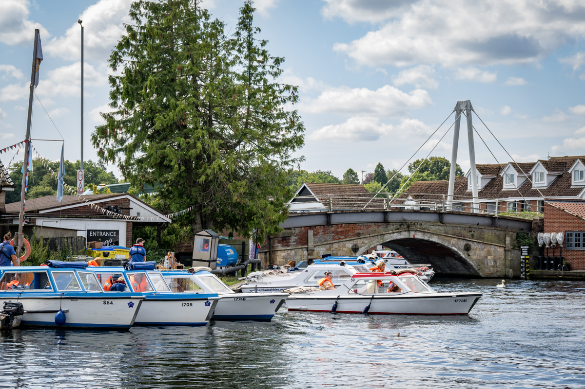
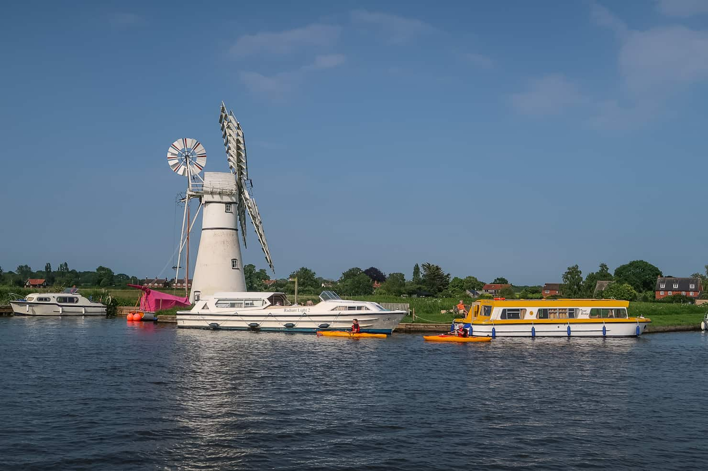
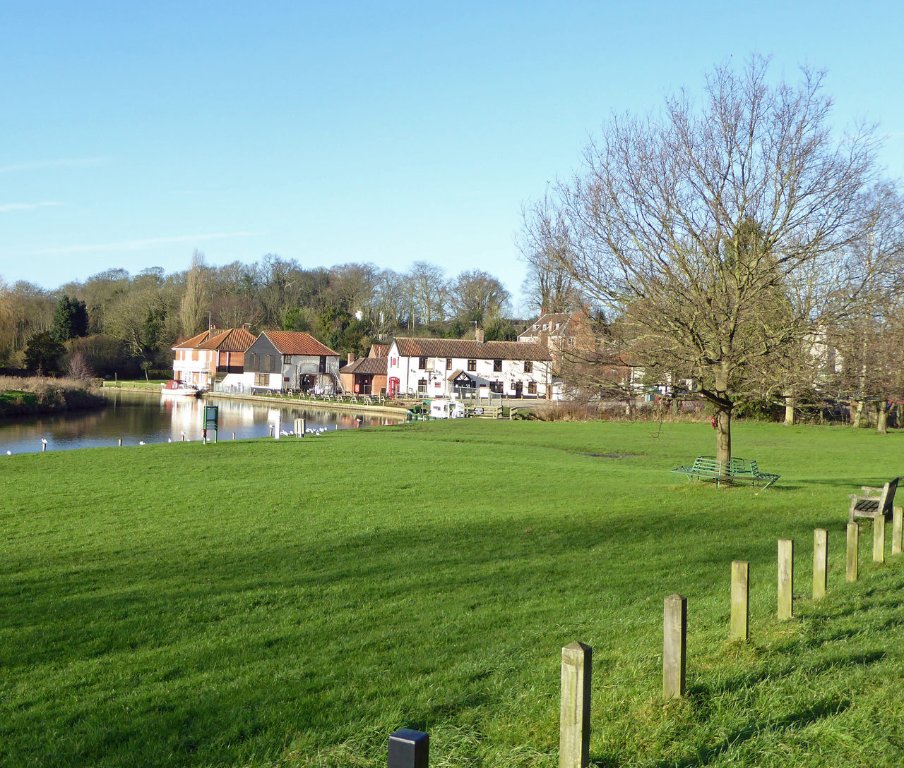

River Bure · Coltishall · Norfolk Broads
Private riverside moorings on the upper River Bure — a sheltered, landscaped setting within the Norfolk Broads National Park.
Welcome
Anchor Moorings is a privately owned riverside site on the River Bure in Coltishall — offering long-term private moorings and a small number of short-stay visitor berths in a quiet, well-maintained setting.
Nestled within the Norfolk Broads National Park, the site sits just before Coltishall Common. It's sheltered from prevailing winds, has minimal tidal variation, and connects you to some of the finest cruising on the upper Bure — between Coltishall and Wroxham.
View Our Moorings


30+
Years Established
2
Private Dykes
£15
Per Night, Visitors
NP
National Park
Private Moorings
We offer annual private moorings for boat owners looking for a settled, secure base on the upper Broads. Mooring positions are allocated based on vessel size and availability, with fees calculated by boat length and berth type.
Main River
Extensive quay headings along the main River Bure for vessels 25ft and over. Secure mooring rings, landscaped surrounds, and easy embarkation access.
Main Dyke
Side-on and stern-on configurations within our sheltered on-site dyke, featuring oak quay headings and individually metered electricity points.

Small Boat Dyke
Dedicated moorings for day boats and vessels under 25ft, with grass bank and quay heading options in a quieter, more sheltered cut.
Currently operating a waiting list
When fully occupied, new applicants are placed on our waiting list. Please enquire to register your interest — we'll be in touch as soon as a suitable berth becomes available.

Visitor Moorings
We typically have one or two visitor berths available for short stays — a quieter and more sheltered alternative to the public moorings at Coltishall Common. Fresh water is available on-site.
£15
Per night
2 nights
Maximum stay
Day Fishing
Day fishing permits for designated riverbank areas. Species include Perch, Roach, Bream, and Pike. Please contact us before setting up.
£10 per day
Motorhomes & Caravans
Limited short-term pitches are available for small to medium campervans and caravans. Advance booking required — contact us for availability and pricing.
Enquire about pitches →On-site Facilities
Anchor Moorings is maintained to a high standard throughout the year. Private mooring holders benefit from full amenity access; visitor mooring guests have use of water and outdoor facilities.
Individually metered electric hook-up points available as an optional extra for long-term berth holders.
Fresh water access point available to all berth holders and visitors. 50p per use for visitor top-ups.
Two private, heated shower and toilet rooms with keycode entry — included in annual mooring fees for private berth holders.
Open grassed area, picnic tables, waterside benches, and mature shady trees — a pleasant spot to relax on the riverbank.
On-site marine engineer available for boat maintenance, repairs, and winterisation services throughout the year.
Well-behaved dogs are welcome on the site. Coltishall and the surrounding riverside walks are excellent for dog owners.
Location
Coltishall sits at the navigable head of the River Bure — one of the Broads' most scenic stretches. The village is within the Norfolk Broads National Park, surrounded by protected wetlands, reed beds, and open skies.
From Anchor Moorings, you can cruise south-east through Wroxham and on to the wider Broads network — Ranworth, Acle, and beyond. The upper Bure between Coltishall and Wroxham is known for its unspoilt character and quieter cruising conditions.
Find Us
Anchor Moorings
20 Anchor Street
Coltishall, Norfolk
NR12 7AQ
Village Amenities
Pubs & Dining
Rising Sun
Kings Head
The Red Lion
The Recruiting Sergeant
Jason's Fish & Chips
The Peking Blossom
Ali Spice
Local Services
Village shops
Post office
Coltishall Common
Transport
Buses to Norwich
Bure Valley Railway
Rail via Wroxham

About Us
Anchor Moorings has its roots in the Anchor Hotel — a pub established in 1836 by the Coltishall Brewery, which stood on this site before being converted to residential use around 1985.
Lenny and Fran Howard purchased the property in 1994 and over the following years carefully landscaped and developed the riverside grounds into the moorings site you see today — including new quay headings installed in 2013.
The site is now in the care of Sam, Michelle, and Scott — continuing the family tradition of providing a welcoming, well-maintained mooring for the boating community on the Norfolk Broads.
Get in TouchContact
Whether you're interested in a long-term mooring, a short visitor berth, a day fishing permit, or a motorhome pitch — we're happy to help. Get in touch and we'll respond as soon as possible.
Address
20 Anchor Street
Coltishall, Norfolk
NR12 7AQ
Message received — thank you
We'll be in touch as soon as possible.